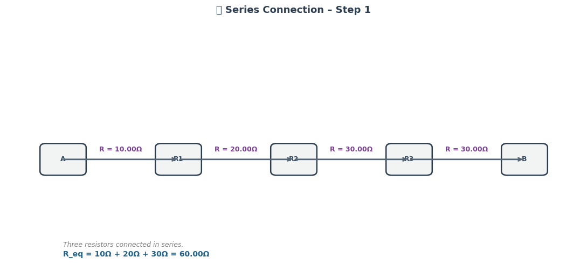
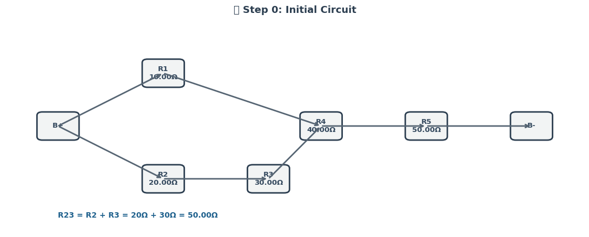
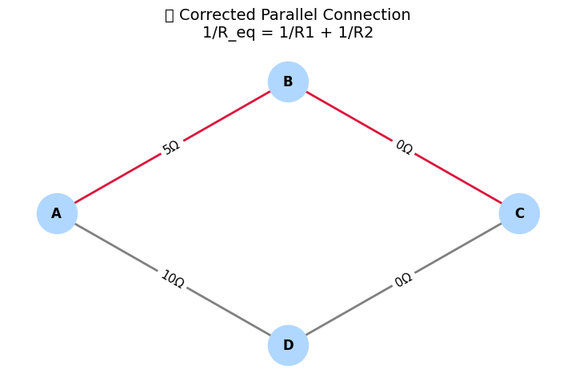
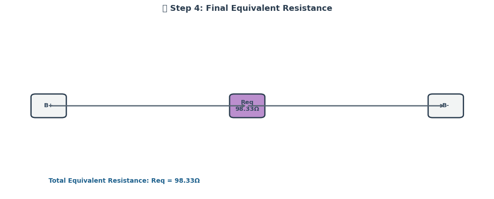
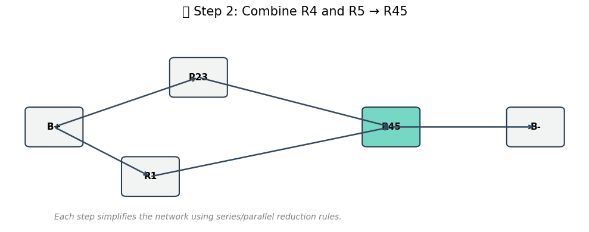
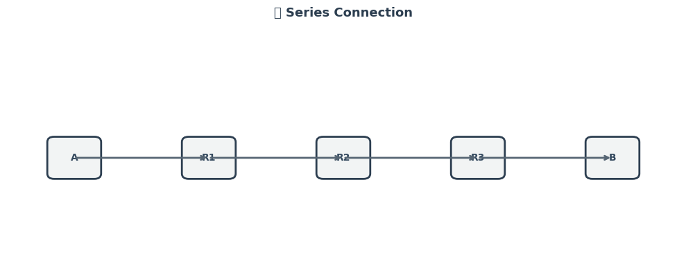
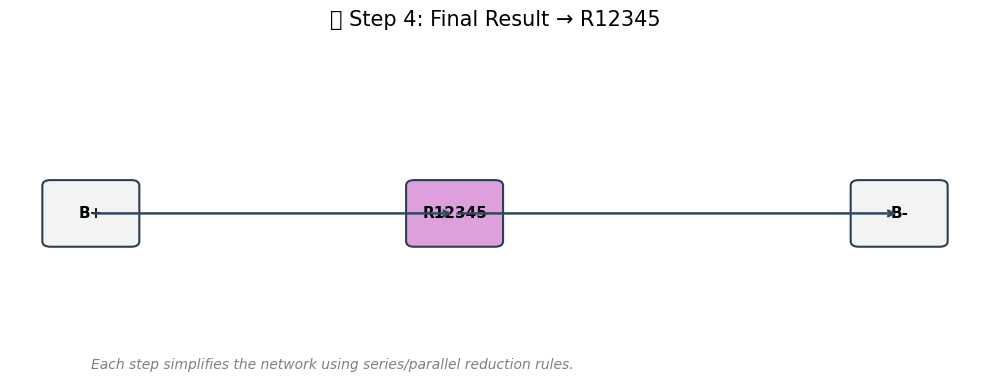
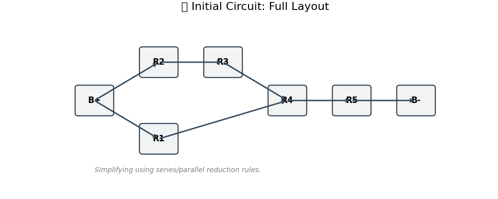

📘 Phase 1: Understanding the Concepts
🔌 Equivalent Resistance Rules
Understanding how resistors combine is fundamental before translating circuits into graph models.
➕ Series Connection
- Resistors are in series if they are connected end-to-end with no branching.
- The equivalent resistance is the sum of the individual resistances:
- Current through each resistor is the same.
- Voltage divides across resistors.
🔁 Parallel Connection
- Resistors are in parallel if both ends are connected to the same two nodes.
- The reciprocal of the equivalent resistance is the sum of reciprocals:
-
Voltage across each resistor is the same.
-
Current divides among the resistors.
📈 Circuit-to-Graph Mapping
To apply graph theory, we convert the electrical circuit into a mathematical graph:
-
Nodes represent junctions in the circuit.
-
Edges represent resistors, with the edge weight equal to the resistor’s resistance (in ohms, \(\Omega\)).
🧠 Key Concepts
- A resistor between two junctions is modeled as an undirected weighted edge between two nodes.
-
The full circuit becomes a weighted undirected graph \(G = (V, E)\), where:
-
\(V\) is the set of junctions (vertices),
-
\(E\) is the set of resistors (edges with weights).
✅ Benefits of Graph Representation
- Structured and algorithmic simplification.
- Supports complex topologies and nested resistor configurations.
- Enables usage of algorithms from graph theory, such as traversal, cycle detection, and graph reduction.
🧭 Summary
By understanding how resistors combine and how to represent circuits as graphs, we lay the groundwork for designing an algorithm that can automate the process of finding equivalent resistance—even in complex, nested networks.
✅ Phase 2: Develop the Algorithm (Conceptual Level)
🔍 Objective
We aim to design an algorithm that calculates the equivalent resistance of a complex circuit represented as a graph. The method must iteratively detect, simplify, and combine resistors until the graph reduces to a single equivalent resistance between two terminals.
🧠 Key Concepts
➕ Series Connection Detection

- A series configuration occurs when:
- Two resistors share a common node of degree 2.
- No branching occurs at this node.
- The equivalent resistance for series:
$$ R_{\text{eq}} = R_1 + R_2 $$
🔁 Parallel Connection Detection
- A parallel configuration exists when:
- Multiple edges connect the same pair of nodes.
- The equivalent resistance for parallel:
🔁 Iterative Graph Simplification
We apply the following logic iteratively until the entire graph reduces to a single edge representing the total equivalent resistance:
- Detect series resistor pairs and combine.
- Detect parallel resistor groups and combine.
- Replace each group with its equivalent resistance.
- Repeat until no more simplifications are possible.
🧾 Pseudocode: Resistance Reduction Algorithm
function compute_equivalent_resistance(graph G):
while G has more than two nodes:
for each node v in G:
if degree(v) == 2:
u, w = neighbors of v
if edge(u, v) and edge(v, w) exist:
R1 = weight of edge(u, v)
R2 = weight of edge(v, w)
replace with edge(u, w) with weight R1 + R2
remove node v and its incident edges
for each pair of nodes (u, v):
if multiple edges exist between u and v:
Let R1, R2, ..., Rn be the weights of all edges(u, v)
compute R_eq using:
1 / R_eq = 1 / R1 + 1 / R2 + ... + 1 / Rn
replace all edges(u, v) with a single edge of weight R_eq
return weight of final edge between terminals
🔄 Handling Nested Combinations

- Nested structures (e.g. series within parallel) are simplified recursively or by repeated iteration.
- The graph is dynamically updated:
- Merging two resistors may enable a new parallel pattern.
- Re-check after each merge.
✅ Summary
This algorithm provides a robust and scalable method for calculating the equivalent resistance in arbitrary networks by:
- Modeling the circuit as a graph.
- Identifying structural patterns (series, parallel).
- Reducing them iteratively using physics-based rules.
The approach is suitable for both manual analysis and automated implementations in tools like Python with networkx.
✅ Phase 3: Work on Examples
🔍 Goal
To demonstrate how the algorithm simplifies real-world circuit cases, we analyze three examples:
- Pure Series Resistors
- Pure Parallel Resistors
- Nested Configuration (Series and Parallel combined)
Each example includes a description, circuit logic, and a step-by-step simplification.
🔸 Example 1: Series Resistors
🧩 Description
Three resistors connected in series between two nodes A and D.
-
Components:
-
\(R_1 = 5\ \Omega\)
-
\(R_2 = 10\ \Omega\)
-
\(R_3 = 15\ \Omega\)
-
Connection: A — R₁ — B — R₂ — C — R₃ — D
⚙️ Simplification Logic
- Series resistors are linearly connected:
- Algorithm detects each degree-2 node and collapses them iteratively:
- Combine A–B and B–C into A–C
- Then combine A–C and C–D into A–D
🔸 Example 2: Parallel Resistors
🧩 Description
Two resistors connected in parallel between nodes A and B.
-
Components:
-
\(R_1 = 10\ \Omega\)
-
\(R_2 = 20\ \Omega\)
-
Connection:
-
Path 1: A → R₁ → B
-
Path 2: A → R₂ → B
⚙️ Simplification Logic
- Parallel resistors are connected across the same two nodes:
- Algorithm groups all edges between A and B, replaces them with the calculated equivalent resistance.
🔸 Example 3: Nested Configuration (Series + Parallel)
🧩 Description
-
\(R_1 = 5\ \Omega\) (A → B)
-
\(R_2 = 10\ \Omega\) (B → C)
-
\(R_3 = 20\ \Omega\) (B → C) — parallel to R₂
-
\(R_4 = 5\ \Omega\) (C → D)
🛠 Structure:
- A — R₁ — B
- B → R₂ → C
- B → R₃ → C (in parallel with R₂)
- C → R₄ → D
⚙️ Simplification Logic
-
Parallel between B–C: $$ \frac{1}{R_{BC}} = \frac{1}{10} + \frac{1}{20} = \frac{3}{20} \Rightarrow R_{BC} = \frac{20}{3} \approx 6.67\ \Omega $$
-
New path becomes:
-
A — R₁ — B — \(R_{BC}\) — C — R₄ — D
-
Series total:
-
The algorithm reduces:
-
Parallel group → replaces with \(R_{BC}\)
-
Remaining series → collapsed step-by-step
Visual





✅ Summary
| Type | Formula Used | Result |
|---|---|---|
| Series | \(R_{\text{eq}} = R_1 + R_2 + \dots + R_n\) | \(30\ \Omega\) |
| Parallel | \(\frac{1}{R_{\text{eq}}} = \sum \frac{1}{R_i}\) | \(6.67\ \Omega\) |
| Nested | Series + Parallel combination | \(16.67\ \Omega\) |
These examples validate how graph-based simplification can be used to iteratively reduce circuits of arbitrary complexity using consistent rules and clear patterns.
✅ Phase 4: Analyze the Algorithm
📊 Efficiency Evaluation
Understanding the computational efficiency of the graph-based resistance simplification algorithm is key for scaling to large networks.
🔄 Number of Steps
-
Let \(n\) be the number of nodes, and \(m\) be the number of edges (resistors).
-
In the worst case, the algorithm performs:
-
\(O(n)\) passes for series simplifications.
-
\(O(m)\) checks for parallel edge reductions.
📉 Complexity of Series/Parallel Detection
➕ Series Detection:
-
For each node \(v\):
-
Check if \(\text{deg}(v) = 2\)
-
Cost: \(O(n)\) per pass
-
If two neighbors \(u\) and \(w\) are connected to \(v\):
-
Combine \(R_{uv}\) and \(R_{vw}\) into \(R_{uw}\)
-
Time per operation: \(O(1)\)
-
Total complexity (series-only): \(O(n^2)\) in worst case due to repeated passes.
🔁 Parallel Detection:
- For each unordered pair of nodes \((u, v)\):
- Collect all edges between them: \(O(m)\)
- Reduce them using:
- Total complexity (parallel-only): \(O(m^2)\) worst case for densely connected graphs.
⚠️ Limitations
🧩 Edge Cases & Complex Cycles
- The current algorithm assumes:
- Graph is connected.
- No dependent sources or nonlinear elements (e.g., capacitors, inductors).
- Bridging nodes (nodes that are part of multiple paths) may delay detection of simplification patterns.
- Circuits with cycles that are not purely parallel can be harder to simplify without advanced techniques (e.g., mesh analysis).
📈 Visualization

✅ Summary
| Aspect | Summary |
|---|---|
| Series Detection | Fast per step, repeated passes required (\(O(n^2)\) worst case) |
| Parallel Detection | Simple but costly in dense graphs (\(O(m^2)\) worst case) |
| Limitations | Cannot directly solve meshes, bridges, or nonlinear elements |
| Improvements | DFS, union-find, real-time animation, and better data structures |
This phase ensures the algorithm isn't just correct, but also efficient, scalable, and educationally valuable in practice.
Python Codes
# 📘 Colab-ready animated circuit simplification (clean, labeled, and colorful)
import matplotlib.pyplot as plt
import matplotlib.patches as patches
import matplotlib.animation as animation
# Position layout of circuit elements
positions = {
"B+": (0, 2),
"R1": (2, 0.5),
"R2": (2, 3.5),
"R3": (4, 3.5),
"R4": (6, 2),
"R5": (8, 2),
"R23": (3, 3.5),
"R45": (7, 2),
"R123": (3, 2),
"R12345": (4.5, 2),
"B-": (10, 2)
}
# Simplification steps
steps = [
{
"title": "🔰 Initial Circuit: Full Layout",
"boxes": ["B+", "R1", "R2", "R3", "R4", "R5", "B-"],
"lines": [("B+", "R2"), ("R2", "R3"), ("R3", "R4"),
("B+", "R1"), ("R1", "R4"), ("R4", "R5"), ("R5", "B-")],
"highlight": []
},
{
"title": "🔁 Step 1: Combine R2 and R3 → R23",
"boxes": ["B+", "R1", "R23", "R4", "R5", "B-"],
"lines": [("B+", "R23"), ("R23", "R4"),
("B+", "R1"), ("R1", "R4"), ("R4", "R5"), ("R5", "B-")],
"highlight": ["R23"]
},
{
"title": "🔁 Step 2: Combine R4 and R5 → R45",
"boxes": ["B+", "R1", "R23", "R45", "B-"],
"lines": [("B+", "R23"), ("R23", "R45"),
("B+", "R1"), ("R1", "R45"), ("R45", "B-")],
"highlight": ["R45"]
},
{
"title": "🔁 Step 3: Combine R1 and R23 → R123",
"boxes": ["B+", "R123", "R45", "B-"],
"lines": [("B+", "R123"), ("R123", "R45"), ("R45", "B-")],
"highlight": ["R123"]
},
{
"title": "✅ Final Result: R12345",
"boxes": ["B+", "R12345", "B-"],
"lines": [("B+", "R12345"), ("R12345", "B-")],
"highlight": ["R12345"]
}
]
# Highlight color palette
highlight_colors = {
"R23": "#FF6F61",
"R45": "#76D7C4",
"R123": "#85C1E9",
"R12345": "#DDA0DD"
}
# Function to draw one frame
def draw_frame(i):
step = steps[i]
ax.clear()
ax.set_xlim(-1, 11)
ax.set_ylim(-1, 5)
ax.axis("off")
ax.set_title(step["title"], fontsize=16, pad=20)
# Draw blocks
for box in step["boxes"]:
x, y = positions[box]
color = highlight_colors.get(box, "#D6DBDF") if box in step["highlight"] else "#F2F4F4"
rect = patches.FancyBboxPatch((x - 0.5, y - 0.5), 1, 1,
boxstyle="round,pad=0.1", edgecolor="#2C3E50",
facecolor=color, linewidth=1.5)
ax.add_patch(rect)
ax.text(x, y, box, ha="center", va="center", fontsize=12, weight="bold")
# Draw arrows
for u, v in step["lines"]:
x1, y1 = positions[u]
x2, y2 = positions[v]
ax.annotate("",
xy=(x2, y2), xytext=(x1, y1),
arrowprops=dict(arrowstyle="->", lw=2, color="#34495E"))
ax.text(0, -0.8, "Simplifying using series/parallel reduction rules.",
fontsize=10, style='italic', color='gray')
# Create animation
fig, ax = plt.subplots(figsize=(10, 4))
ani = animation.FuncAnimation(fig, draw_frame, frames=len(steps), interval=1500, repeat=True)
# Save GIF
gif_path = "/content/circuit_simplification_animation.gif"
ani.save(gif_path, writer="pillow", fps=1)
print("✅ GIF saved to:", gif_path)
# 📦 Series and Parallel Resistor Simplification (Clean Visuals)
import matplotlib.pyplot as plt
import matplotlib.patches as patches
# Node layout for both types
positions_series = {
"A": (0, 2),
"R1": (1.5, 2),
"R2": (3, 2),
"R3": (4.5, 2),
"Req": (3, 2),
"B": (6, 2)
}
positions_parallel = {
"A": (0, 2),
"R1": (1.5, 3),
"R2": (1.5, 1),
"Req": (1.5, 2),
"B": (3, 2)
}
# Highlight color
highlight_color = {
"Req": "#BB8FCE"
}
# Draw block-based circuit
def draw_circuit(title, boxes, lines, highlight=[], positions=None, note=""):
fig, ax = plt.subplots(figsize=(8, 4))
ax.set_xlim(-1, 7)
ax.set_ylim(0, 4)
ax.axis("off")
ax.set_title(title, fontsize=14, pad=15)
for node in boxes:
x, y = positions[node]
color = highlight_color.get(node, "#F2F4F4") if node in highlight else "#F2F4F4"
rect = patches.FancyBboxPatch((x - 0.5, y - 0.5), 1, 1,
boxstyle="round,pad=0.1", edgecolor="#2C3E50",
facecolor=color, linewidth=1.5)
ax.add_patch(rect)
ax.text(x, y, node, ha="center", va="center", fontsize=11, weight="bold")
for u, v in lines:
x1, y1 = positions[u]
x2, y2 = positions[v]
ax.annotate("",
xy=(x2, y2), xytext=(x1, y1),
arrowprops=dict(arrowstyle="->", lw=1.8, color="#34495E"))
if note:
ax.text(0, 0.2, note, fontsize=10, style='italic', color='gray')
plt.tight_layout()
plt.show()
# 🔹 SERIES CONNECTION
# Step 1: Initial
draw_circuit(
"🔰 Series Connection: Step 1 – R1 → R2 → R3",
["A", "R1", "R2", "R3", "B"],
[("A", "R1"), ("R1", "R2"), ("R2", "R3"), ("R3", "B")],
positions=positions_series,
note="Three resistors connected end-to-end in series."
)
# Step 2: Simplified to Req
draw_circuit(
"✅ Series Connection: Step 2 – Combine R1, R2, R3 → Req",
["A", "Req", "B"],
[("A", "Req"), ("Req", "B")],
highlight=["Req"],
positions=positions_series,
note="Equivalent resistance Req = R1 + R2 + R3"
)
# 🔸 PARALLEL CONNECTION
# Step 1: Initial
draw_circuit(
"🔰 Parallel Connection: Step 1 – R1 || R2",
["A", "R1", "R2", "B"],
[("A", "R1"), ("R1", "B"), ("A", "R2"), ("R2", "B")],
positions=positions_parallel,
note="R1 and R2 are both connected between A and B."
)
# Step 2: Simplified to Req
draw_circuit(
"✅ Parallel Connection: Step 2 – Combine R1 || R2 → Req",
["A", "Req", "B"],
[("A", "Req"), ("Req", "B")],
highlight=["Req"],
positions=positions_parallel,
note="Equivalent: 1/Req = 1/R1 + 1/R2"
)
# 🔁 Nested Combination Circuit Simplification - Colab Ready
import matplotlib.pyplot as plt
import matplotlib.patches as patches
# Layout positions for nested structure
positions = {
"A": (0, 2),
"R1": (1.5, 2),
"R2": (3, 3.5),
"R3": (3, 0.5),
"R23": (3, 2),
"R4": (4.5, 2),
"R123": (2.25, 2),
"R1234": (3.75, 2),
"B": (6, 2)
}
# Define nested steps
steps = [
{
"title": "🔰 Initial Nested Circuit",
"boxes": ["A", "R1", "R2", "R3", "R4", "B"],
"lines": [("A", "R1"), ("R1", "R2"), ("R1", "R3"),
("R2", "R4"), ("R3", "R4"), ("R4", "B")],
"highlight": []
},
{
"title": "🔁 Step 1: R2 and R3 in Parallel → R23",
"boxes": ["A", "R1", "R23", "R4", "B"],
"lines": [("A", "R1"), ("R1", "R23"), ("R23", "R4"), ("R4", "B")],
"highlight": ["R23"]
},
{
"title": "🔁 Step 2: R1 and R23 in Series → R123",
"boxes": ["A", "R123", "R4", "B"],
"lines": [("A", "R123"), ("R123", "R4"), ("R4", "B")],
"highlight": ["R123"]
},
{
"title": "✅ Step 3: R123 and R4 in Series → R1234",
"boxes": ["A", "R1234", "B"],
"lines": [("A", "R1234"), ("R1234", "B")],
"highlight": ["R1234"]
}
]
# Highlight colors for merged resistors
highlight_colors = {
"R23": "#F1948A", # soft red
"R123": "#5DADE2", # soft blue
"R1234": "#BB8FCE" # purple
}
# Draw each step
def draw_nested_step(step):
fig, ax = plt.subplots(figsize=(9, 4))
ax.set_xlim(-1, 7)
ax.set_ylim(-1, 5)
ax.axis("off")
ax.set_title(step["title"], fontsize=15, pad=15)
# Draw nodes
for box in step["boxes"]:
x, y = positions[box]
color = highlight_colors.get(box, "#D6DBDF") if box in step["highlight"] else "#F2F4F4"
rect = patches.FancyBboxPatch((x - 0.5, y - 0.5), 1, 1,
boxstyle="round,pad=0.1", edgecolor="#2C3E50",
facecolor=color, linewidth=1.5)
ax.add_patch(rect)
ax.text(x, y, box, ha="center", va="center", fontsize=11, weight="bold")
# Draw arrows
for u, v in step["lines"]:
x1, y1 = positions[u]
x2, y2 = positions[v]
ax.annotate("",
xy=(x2, y2), xytext=(x1, y1),
arrowprops=dict(arrowstyle="->", lw=1.8, color="#34495E"))
ax.text(0, -0.8, "Nested structure: R2 || R3 → R23, then in series with R1 and R4.",
fontsize=10, style='italic', color='gray')
plt.tight_layout()
plt.show()
# Show all nested steps
for step in steps:
draw_nested_step(step)
# 📘 Colab-ready enhanced visualization of circuit simplification steps
import matplotlib.pyplot as plt
import matplotlib.patches as patches
# Position layout
positions = {
"B+": (0, 2),
"R1": (2, 0.5),
"R2": (2, 3.5),
"R3": (4, 3.5),
"R4": (6, 2),
"R5": (8, 2),
"R23": (3, 3.5),
"R45": (7, 2),
"R123": (3, 2),
"R12345": (4.5, 2),
"B-": (10, 2)
}
# Steps of simplification
steps = [
{
"title": "🔰 Initial Circuit: Full Layout",
"boxes": ["B+", "R1", "R2", "R3", "R4", "R5", "B-"],
"lines": [("B+", "R2"), ("R2", "R3"), ("R3", "R4"),
("B+", "R1"), ("R1", "R4"), ("R4", "R5"), ("R5", "B-")],
"highlight": []
},
{
"title": "🔁 Step 1: Combine R2 and R3 → R23",
"boxes": ["B+", "R1", "R23", "R4", "R5", "B-"],
"lines": [("B+", "R23"), ("R23", "R4"),
("B+", "R1"), ("R1", "R4"), ("R4", "R5"), ("R5", "B-")],
"highlight": ["R23"]
},
{
"title": "🔁 Step 2: Combine R4 and R5 → R45",
"boxes": ["B+", "R1", "R23", "R45", "B-"],
"lines": [("B+", "R23"), ("R23", "R45"),
("B+", "R1"), ("R1", "R45"), ("R45", "B-")],
"highlight": ["R45"]
},
{
"title": "🔁 Step 3: Combine R1 and R23 → R123",
"boxes": ["B+", "R123", "R45", "B-"],
"lines": [("B+", "R123"), ("R123", "R45"), ("R45", "B-")],
"highlight": ["R123"]
},
{
"title": "✅ Step 4: Final Result → R12345",
"boxes": ["B+", "R12345", "B-"],
"lines": [("B+", "R12345"), ("R12345", "B-")],
"highlight": ["R12345"]
}
]
# Highlight colors
highlight_colors = {
"R23": "#FF6F61", # orange red
"R45": "#76D7C4", # mint
"R123": "#85C1E9", # sky blue
"R12345": "#DDA0DD" # orchid
}
# Drawing function
def draw_step(step):
fig, ax = plt.subplots(figsize=(10, 4))
ax.set_xlim(-1, 11)
ax.set_ylim(-1, 5)
ax.axis("off")
ax.set_title(step["title"], fontsize=15, pad=15)
# Draw blocks
for box in step["boxes"]:
x, y = positions[box]
color = highlight_colors.get(box, "#D6DBDF") if box in step["highlight"] else "#F2F4F4"
rect = patches.FancyBboxPatch((x - 0.5, y - 0.5), 1, 1,
boxstyle="round,pad=0.1", edgecolor="#2C3E50",
facecolor=color, linewidth=1.5)
ax.add_patch(rect)
ax.text(x, y, box, ha="center", va="center", fontsize=11, weight="bold")
# Draw arrows
for u, v in step["lines"]:
x1, y1 = positions[u]
x2, y2 = positions[v]
ax.annotate("",
xy=(x2, y2), xytext=(x1, y1),
arrowprops=dict(arrowstyle="->", lw=1.8, color="#34495E"))
# Optional: description text below
ax.text(0, -0.8, "Each step simplifies the network using series/parallel reduction rules.",
fontsize=10, style='italic', color='gray')
plt.tight_layout()
plt.show()
# Draw each step
for step in steps:
draw_step(step)